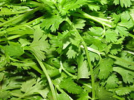

Garlic Widely used as an antibiotic and, more recently, for treating cardiovascular disease Garlic is a monoamine oxidase inhibitor and has antidepressant-like effects on mice so might be used as a herbal antidepressant or anxiolytic in humans.